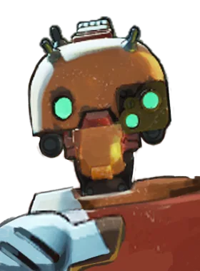

Assassino de mobilidade, bom em encerrar lutas rápido.
História
Uma terra de beleza, tradição e conflito; North Ixia conhece bem a violência política brutal. Então, quando Apollo foi informado de que era para sua própria segurança que ele estava sendo enviado para a escola em Nova York, ele sabia que a situação era séria.
A adaptação à vida na Blackmore Academy não foi fácil para Apollo. Sua escola deveria estar repleta dos melhores e mais brilhantes da Maçã Amaldiçoada, mas tudo o que ele viu, com poucas exceções, foi um mar de mediocridade agressiva. Optando por não perder tempo com coisas frívolas como festas e bailes, ele colocou sua energia na pista, onde treina rigorosamente como capitão do time de esgrima Blackmore.
No entanto, no final das contas, Apollo não se preocupa muito com o tédio da vida em Nova York. Ele sabe que eventualmente chegará o momento em que seu pai o chamará para voltar para casa e ele mostrará que é digno de empunhar a lâmina ancestral de sua família.
História oficial do jogo, traduzida automaticamente para o português.
Números reais
Habilidades
Cria um sigilo que explode à frente de Apollo, ferindo e retardando inimigos, enquanto ele salta para trás.
Prepara-se para aparar o próximo ataque; ao aparar, fica invulnerável por pouco tempo e avança sobre um herói inimigo, atordoando-o e reduzindo sua resistência a corpo a corpo.
Faz uma sequência de estocadas perfurantes; segurar a tecla aumenta o dano, e soltar na janela perfeita causa o dano máximo.
Canaliza um corte de longo alcance que retarda os atingidos, impede suas ações e os cura; quando acaba, eles sofrem dano pesado, maior em inimigos com metade da vida.
Builds mais usadas
8.687 partidas registradas com esta build.
Explosão Mística (800) · Expansão Mística (800) · Regeneração Mística (800) · Regeneração Radiante (3.200) · Healbane (1.600) · Dissipar Magia (3.200) · Pedra de Urdidura (3.200) · Regeneração Extra (800) · Emblema do Encantador (1.600) · Pulso de Tormento (3.200)
7.588 partidas registradas com esta build.
Explosão Mística (800) · Espírito Extra (800) · Regeneração Mística (800) · Expansão Mística (800) · Golpe Espiritual (800) · Espírito Melhorado (1.600) · Impulsionador de cura (1.600) · Healbane (1.600) · Regeneração Radiante (3.200) · Arrebatamento de Espírito (3.200)
4.316 partidas registradas com esta build.
Espírito Extra (800) · Roubo de vida corpo a corpo (800) · Explosão Mística (800) · Expansão Mística (800) · Golpe Espiritual (800) · Arrebatamento de Espírito (3.200) · Espírito Melhorado (1.600) · Impulsionador de cura (1.600) · Carga Corpo a Corpo (1.600) · Golpe de vida (3.200)
Confrontos reais
 Mirage — 55.1% de vitória
Mirage — 55.1% de vitória Shiv — 54.5% de vitória
Shiv — 54.5% de vitória Deadman Danny — 54.5% de vitória
Deadman Danny — 54.5% de vitória Pocket — 54.4% de vitória
Pocket — 54.4% de vitória Viscous — 54.2% de vitória
Viscous — 54.2% de vitória Paradox — 54.0% de vitória
Paradox — 54.0% de vitória
 Graves — 42.0% de vitória
Graves — 42.0% de vitória Paige — 42.3% de vitória
Paige — 42.3% de vitória Rat King — 42.8% de vitória
Rat King — 42.8% de vitória Victor — 44.4% de vitória
Victor — 44.4% de vitória Baba — 45.0% de vitória
Baba — 45.0% de vitória Seven — 45.2% de vitória
Seven — 45.2% de vitória
O que upar primeiro
Nível por nível, na ordem que os jogadores mais usam em partidas de verdade. A porcentagem mostra quantos escolheram aquela habilidade naquele nível.
Melhores duplas
Heróis que mais ganham jogando junto com ele, em partidas reais (pelo menos 1.500 partidas juntos).
- Rat King58,3%
- Graves57,7%
- Paige56,8%
- Seven54,6%
 Haze54,3%
Haze54,3%
- Shiv43,8%
- Mirage43,9%
 Silver44,6%
Silver44,6%
Rota (lane)
Na rota, cada lado joga em dupla. Estes números são de confrontos reais: a diferença de almas é medida com o jogo já começado, então almas no verde significa que ele costuma estar na frente.
- Haze — 42,9% de vitória +177 almas (333 partidas)
- Baba — 45,6% de vitória −555 almas (160 partidas)
- Rat King — 47,4% de vitória +54 almas (934 partidas)
 Mina — 51,7% de vitória +366 almas (271 partidas)
Mina — 51,7% de vitória +366 almas (271 partidas) Drifter — 51,7% de vitória −40 almas (238 partidas)
Drifter — 51,7% de vitória −40 almas (238 partidas)
Bebop — 53,6% de vitória +268 almas (450 partidas) Lash — 54,4% de vitória +155 almas (226 partidas)
Lash — 54,4% de vitória +155 almas (226 partidas) Rem — 59,1% de vitória +0 almas (159 partidas)
Rem — 59,1% de vitória +0 almas (159 partidas)
 Venator — 60,2% de vitória +85 almas (279 partidas)
Venator — 60,2% de vitória +85 almas (279 partidas)- Rem — 59,1% de vitória +0 almas (159 partidas)
- Lash — 54,4% de vitória +155 almas (226 partidas)
Histórico de win rate
08/02: 46.0% → 08/03: 50.1% → 05/04: 50.4% → 03/05: 50.2% → 31/05: 48.0% → 28/06: 49.0% → 26/07: 50.0% → 23/08: 50.0% → 20/09: 50.7% → 18/10: 49.1%